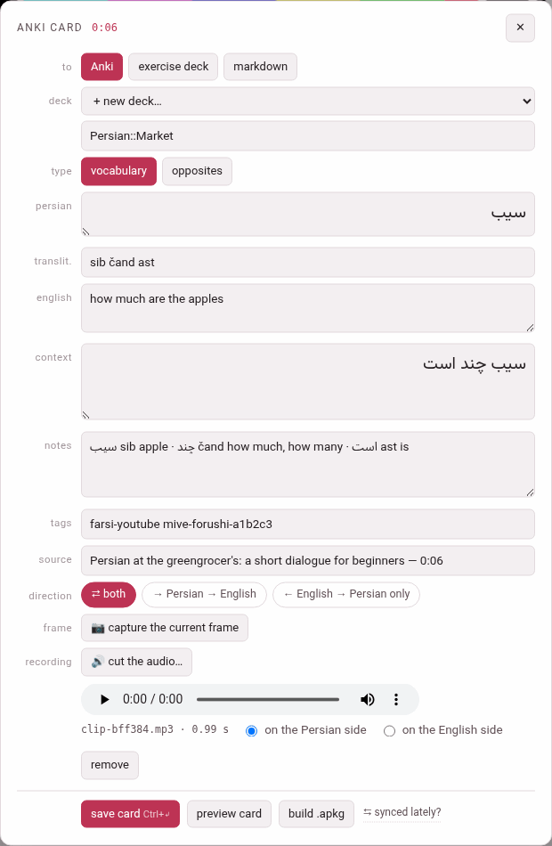
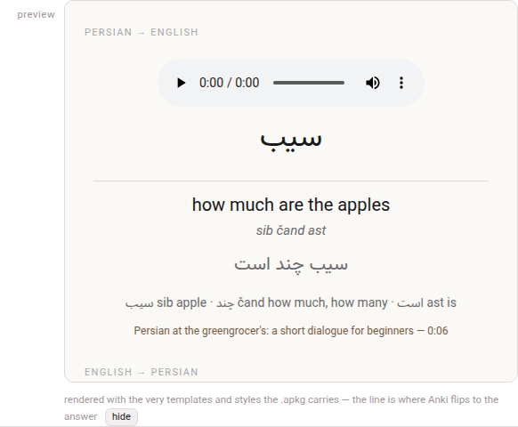

Making a card
A card is made where the word is: in the book reader or in the video player, on the card sheet. The two sheets are the same sheet, and everything on this page holds for both unless it says otherwise.

1. Opening the sheet#
In a video. Hold Alt (or Ctrl, or Cmd on a Mac): the word under the pointer lights up. Click it with the key held and the sheet opens on that word. The video pauses while the sheet is open, and plays on when you close it.
In a book. The same: a modifier-click on a word of the reader opens the sheet on it. The narration pauses while the sheet is open, and plays on when it closes.
A whole phrase. A phrase’s gloss cloud — the box that opens over a chunk — has a + card button beside its copy: it opens the sheet on the whole chunk rather than one word of it. On a touch screen, which has no modifier key, this is the way to make a card: a tap on a chunk opens its cloud (in the book reader, with its hover switch on), and + card does the rest.
What the click takes as the word:
- The word as the chunk writes it, with the quotation marks and stops it was glued to taken off its ends (
«,“,,,?,،,؟,。…); an apostrophe that belongs to the word, as in Italian po’ or Turkish İstanbul’da, stays. - In a book, the fully written form of the word, even in the passes that show it bare (a Persian or Arabic word with its vowel marks).
- In a language written without spaces between words (Japanese, Chinese) a chunk is one word, so the card is the whole chunk.
- A word of a chunk’s word line — the words a Japanese or Chinese chunk is divided into — is that word, with the reading the line gives it.
2. What it fills in#
Everything is filled in from the gloss and is yours to change before saving: the pre-fill is a starting point, not a decision.
| Row | Filled with |
|---|---|
| the language’s row (persian, japanese…) | the word |
| reading (Japanese only) | the chunk’s kana when the card is the whole chunk; the word line’s reading for a word of the line; empty for one word of a chunk, whose reading only you can split |
| translit. | the chunk’s transliteration — for a word of a Chinese word line, the line’s own pinyin for it |
| the meaning’s row | the chunk’s gloss. The row is labelled with the gloss language (english, italian), or meaning when the book or video is glossed in the language it teaches |
| context | for one word, the chunk it sits in; for a whole chunk or a word of a word line, the sentence: the subparagraph in a book, the caption in a video |
| notes | the chunk’s vocabulary line (and, in a video, its note) |
| tags | the language’s tag with -book or -youtube, and the book’s slug or the video’s id: farsi-youtube mive-forushi-a1b2c3, english-book mini-en |
| source | the book’s title and the subparagraph’s number (The Clock and the Wind — 1.1), or the video’s title and the card’s moment (… — 0:06); on the card it links back there |
The head of the sheet names the card — anki card, exercise card or card markdown, after where it goes — with the subparagraph’s number or the video’s time beside it.
The card’s moment in a video is where the video stands when you opened the sheet, if that is inside the caption you clicked (you have just heard the word); otherwise it is that caption’s start, so that a word picked out of another caption links back to where it is said, not to wherever the video happened to be.
The sheet follows the language: the word’s row is labelled with the language’s name and reads in its direction (a Persian or Arabic word, its context and its opposite are written right to left), the reading row appears only for a language that has readings, and the meaning and the notes follow the gloss language’s direction — an Arabic meaning runs right to left inside the sheet too.
3. The rows of the sheet#
| Row | What it does |
|---|---|
| to | where the card goes: Anki, exercise deck or markdown (Where the card goes) |
| deck | the deck it goes into, or + new deck… and a box to name it |
| type | vocabulary or opposites (and jolly, for an exercise deck or markdown) |
| the fields | the word, reading, transliteration, meaning, context, notes |
| tags | Anki’s tags, separated by spaces (Anki only) |
| source | the label of the link back |
| direction | which cards the note makes (Note types and directions) |
| frame | a video only: 📷 capture the current frame (Recordings and frames) |
| recording | 🔊 cut the audio… (Cutting the audio) |
At the foot: save card (with its shortcut, Ctrl+↵), preview card, build .apkg, and — in a video — ⇆ synced lately?, a link to the Sync with Anki page for the moment you are about to build (Building a deck).
The deck#
For Anki the picker lists every Anki deck in the store, with its number of cards: this language’s decks first, then each other language’s under its own heading marked (another language). Pick one, or pick + new deck… and type a name in the box under it. The box suggests a name nested under the language — name the new deck (use :: to nest, e.g. Persian::YouTube) in a video, …::Books in a book — because :: nests decks in Anki: Persian::Market is the deck Market inside Persian. The deck is made when its first card is saved.
A card always goes to the deck of its own language with the name you picked (The card store).
Opposites#
opposites changes the form: the meaning and the context step aside, and an opposite row asks for the opposite word — …the opposite, written by you — with a box for its reading (Japanese) and one for its transliteration (optional). The opposite is always yours to write: the gloss does not know it. The direction then offers ⇄ both and → word → opposite.
4. Saving it#
save card, or Ctrl+Enter (Cmd+Enter on a Mac) anywhere in the sheet, sends the card to the card store. Before it goes, the sheet checks:
| It says | What to do |
|---|---|
| name the new deck first | + new deck… is picked and its name box is empty |
| the Persian side is empty (the language’s name) | write the word |
| write the opposite in first — that is the answer side | an opposites card needs its opposite |
When the card is in, the sheet says so and closes itself a moment later:
saved ✓ — “Persian::Market” (Persian) now has 1 cardIt waits a little longer when the card was filed under another language than the deck you picked (the answer then says so), and it does not close while the cut editor is open over it or once you have typed or clicked in it again.
The sheet keeps what you pressed. Everything the card is made of is read at the moment you press the button, so closing the sheet at once, or opening it again on another word, changes nothing of what was sent; the answer then comes as a note over the page, since the sheet that would have said it is gone.
Closing the sheet — ✕, Esc, or a click outside it — without saving leaves no card. A recording cut on it and never used leaves the clip tray with it (The clip tray).
The sheet remembers where you sent the last card and the deck you last used, separately in the books and in the videos, so a run of cards from one book goes on into the same deck without a click.
5. Preview card#
preview card draws the card below the sheet exactly as Anki will show it: the answer side of each card the note makes, one under another, each named — PERSIAN → ENGLISH, ENGLISH → PERSIAN, ENGLISH → PERSIAN (THE ONLY DIRECTION), OPPOSITE OF THE WORD — with the question above the line where Anki turns to the answer. A recording on the card plays in it, from the clip tray, and a captured frame shows.

It uses the very templates and styling the package will carry — and those are yours: once a sync has learnt how your note types look in your Anki collection, the preview shows your styling, not the factory one (Styling and templates). It follows the toolbox’s theme, dark included. hide puts it away.
For an exercise deck and markdown the preview is the studio’s own drawing of the card instead; see Where the card goes.